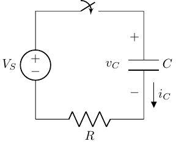
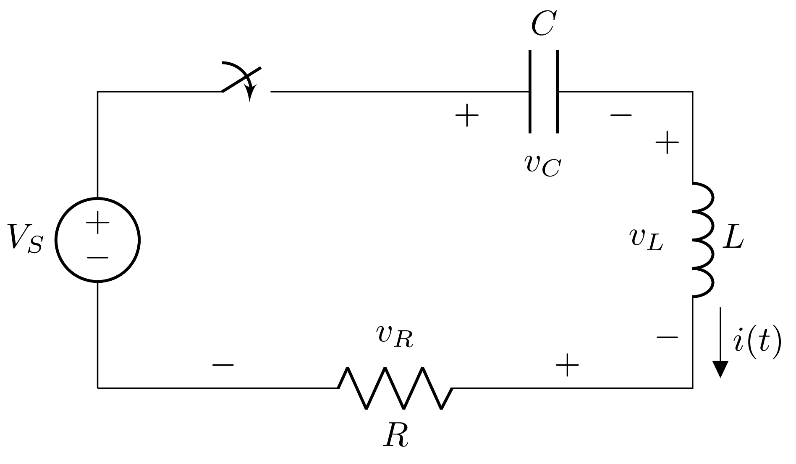

Transient Analysis
BME253L - Fall 2025
Overview
Unlike our filter analysis, which focused on steady-state sinusoidal inputs, transient analysis examines how circuits respond to time-varying signals, especially during switching events. This is crucial for understanding real-world circuit behavior, as many applications involve non-sinusoidal waveforms.
Learning Objectives
Understand how voltage and current change over time in response to switched DC sources in first-order and second-order, passive reactive circuits.
Evaluate transient response, analytically, using differential equations and initial conditions.
Numerically simulate transient response using SPICE.
Switched RC Circuit

Close the switch at \(t = t_0\).
Evaluate the voltage across the capacitor \(v_C(t)\) for \(t \geq t_0\).
How can we model a closing switch mathematically?
Unit step function \(u(t) = \begin{cases} 0, & t < 0 \\ 1, & t \geq 0 \end{cases}\)o
Can scale and shift the unit step function to model a closing switch at \(t = t_0\):
\[ V_A u(t - t_0) = \begin{cases} 0, & t < t_0 \\ V_A, & t \geq t_0 \end{cases} \]
In our example circuit:
Closing the switch at \(t = t_0\) can be modeled as \(V_S\,u(t - t_0)\).
Opening the switch at \(t = t_1\) can be modeled as \(V_S\,u(t - t_0) - V_S\,u(t - t_1)\).
Solving the Switched RC Circuit
We cannot use phasors here because the input is not steady-state sinusoidal.
Instead, we will use the IV relationships for resistors, capacitors and inductors to setup differential equations.
KCL & KVL will be used to setup the equations.
Initial conditions will be used to solve for the constants of integration.
These differential equations will have general forms with known solutions that can be used to simplify the analsis, and we will leverage numerical solution using SPICE and
scipyin your Jupyter notebooks.
Reminder: IV Relationships for Reactive Elements
- Capacitor
\[ \begin{gather} i_C(t) = C \frac{d v_C(t)}{d t} \\ v_C(t) = v_C(t_0) + \frac{1}{C} \int_{t_0}^{t} i_C(t) dt \\ \end{gather} \]
- Inductor
\[ \begin{gather} v_L(t) = L \frac{d i_L(t)}{d t} \\ i_L(t) = i_L(t_0) + \frac{1}{L} \int_{t_0}^{t} v_L(t) dt \\ \end{gather} \]
Back to our Switched RC Circuit
KVL around the loop for \(t \geq t_0\):
\[ \begin{gather} -V_S(t) + v_R(t) + v_C(t) = 0 \\ v_R(t) = i(t) R \\ i(t) = C \frac{d v_C(t)}{d t} \\ v_R(t) = R C \frac{d v_C(t)}{d t} \\ -v_S(t) + R C \frac{d v_C(t)}{d t} + v_C(t) = 0 \\ \Rightarrow R C \frac{d v_C(t)}{d t} + v_C(t) = V_S(t) \end{gather} \]
RC General Form Differential Equation
The general form of the first-order linear differential equation for an RC circuit is:
\[ \tau \frac{d v_o(t)}{d t} + v_o(t) = \kappa\,v_i(t) \]
\(\tau = R C\) is the time constant of the circuit
\(\kappa\) is the steady-state gain of the circuit
- \(\kappa = 1\) for a passive series RC circuit
RC General Form Solution
The solution to the general form differential equation for an RC circuit is:
\[ v_o(t) = v_n(t) + v_f(t) \]
\(v_n(t)\) is the natural response (homogeneous solution)
\(\tau \frac{d v_n(t)}{d t} + v_n(t) = 0\)
“Homogeneous” part of the solution (means the input is zero (circuit is not driven))
Solution Form: \(v_n(t) = A e^{-\frac{t - t_0}{\tau}}\)
\(A\) is a constant determined by initial conditions
\(v_f(t)\) is the forced response (particular solution)
\(\tau \frac{d v_f(t)}{d t} + v_f(t) = \kappa\,v_i(t)\)
\(v_f(t)\) depends on the form of \(v_i(t)\) (how the circuit is driven)
Lets solve for the natural response…
\[ \begin{gather} \textrm{Remove the forced response:} v_i(t) = 0 \\ R C \frac{d v_n(t)}{d t} + v_n(t) = 0 \\ v_n(t) = A e^{st} \textrm{($s$ is a constant)}\\ R C A s e^{st} + A e^{st} = 0 \\ (R C s + 1) A e^{st} = 0 \\ \end{gather} \]
\(A e^{st} \neq 0\) for all \(t\)
Characteristic Equation: \(R C s + 1 = 0 \Rightarrow s = -\frac{1}{R C} = -\frac{1}{\tau}\)
Natural Response: \(v_n(t) = A e^{-\frac{t}{\tau}} = A e^{-\frac{t - t_0}{\tau}}\)
\(A\) is determined by the initial condition \(v_n(t_0)\)
Now onto the forced response solution…
If \(v_i(t)\) is a DC source that is switched on at \(t = t_0\):
\[ v_i(t) = V_A u(t - t_0) = \begin{cases} 0, & t < t_0 \\ V_A, & t \geq t_0 \end{cases} \]
\[ \begin{gather} R C \frac{d v_f(t)}{d t} + v_f(t) = V_A \\ v_f(t) = V_A \textrm{(constant!)} \\ \frac{d v_f(t)}{d t} = 0 \\ R C (0) + V_A = V_A \\ V_A = V_A \\ \end{gather} \]
Lets put our complete solution together…
\[ \begin{gather} v_o(t) = v_n(t) + v_f(t) \\ v_o(t) = A e^{-\frac{t - t_0}{\tau}} + V_A \\ \end{gather} \]
\(A\) is determined by the initial condition \(v_o(t_0)\) (right before the switch is closed).
Since the capacitor voltage cannot change instantaneously:
\[ \begin{gather} v_C(t_0^-) = v_C(t_0^+) \Rightarrow v_C(t_0) = v_C(t_0^-) \\ A e^{-\frac{t_0 - t_0}{\tau}} + V_A = v_C(t_0^-) \\ A = v_C(t_0^-) - V_A \\ \end{gather} \]
\[ v_C(t) = \left(v_C(t_0^-) - V_A\right) e^{-\frac{t - t_0}{\tau}} + V_A, \quad t \geq t_0 \]
Numerical Solution
Piecewise Linear (PWL) Sources
In-class demo. Take home points:
- Identify initial and steady-state conditions.
- Apply knowledge of the natural solution (exponential decay) between switching events.
- Apply forced response based on the new input after each switching event.
KiCad SPICE Simulation with Pulse Source
Second-Order Circuits
RLC circuits are second-order circuits because their governing differential equations are second-order.
Second-order differential equations have the general form:
\[ a_2 \frac{d^2x(t)}{dt^2} + a_1 \frac{dx(t)}{dt} + a_0x(t) = b_0f(t) \]
- How do we derive this…
Switched RLC Circuit

Apply KVL around the loop for \(t \geq 0\):
\[ \begin{gather} V_S - v_C(t) - v_L(t) - v_R(t) = 0 \\ v_R(t) = i(t) R \\ v_C(t) = \frac{1}{C} \int_{0}^{t} + v_C(0)\\ i(t) = C \frac{d v_C(t)}{d t} \\ v_L(t) = L \frac{d i(t)}{d t} \\ \end{gather} \]
This yields:
\[ V_S(t) = i(t) R + L \frac{d i(t)}{d t} + \frac{1}{C} \int_{0}^{t} i(t) dt + v_C(0) \\ \]
But this is a mess to work with, so lets represent \(i(t)\) in terms of \(v_C(t)\):
\[ \begin{gather} v_R = i(t) R = R C \frac{d v_C(t)}{d t} \\ v_L = L \frac{d i(t)}{d t} = L \frac{d}{d t} \left( C \frac{d v_C(t)}{d t} \right) = L C \frac{d^2 v_C(t)}{d t^2} \\ \end{gather} \]
So we now have a second-order differential equation in terms of \(v_C(t)\):
\[ V_S(t) = L C \frac{d^2 v_C(t)}{d t^2} + R C \frac{d v_C(t)}{d t} + v_C(t) \]
How do we solve this second-order differential equation?
We now need two initial conditions to solve this second-order differential equation.
\(v_C(0)\): initial voltage across the capacitor
\(i(0)\): initial current through the inductor
\[ i_L(0) = i_C(0) = C \frac{d v_C(0)}{d t} \\ \]
General Solution Form
\[ a_2 \frac{d^2v(t)}{dt^2} + a_1 \frac{dv(t)}{dt} + a_0v(t) = b_0f(t) \]
The coefficients for the terms above have “physical” meaning to how our circuit response:
\[ \frac{1}{\omega^{2}_{n}} \frac{d^2v(t)}{dt^2} + \frac{2\zeta}{\omega_n} \frac{dv(t)}{dt} + v(t) = K_Sf(t) \]
| Parameter | Meaning |
|---|---|
| \(\omega_n\) | Natural/Resonant Frequency (radians/second) |
| \(\zeta\) | Damping Ratio (unitless) |
| \(K_S\) | Static Sensitivity (“DC” Gain, unitless) |
Natural/Resonant Frequency
\(\omega_n\) determines how fast the circuit responds to changes in the input.
\(\omega_n = \frac{1}{\sqrt{L C}}\) for a series RLC circuit.
Damping Ratio
\(\zeta = \frac{R}{2} \sqrt{\frac{C}{L}}\) for a series RLC circuit.
DC Gain
Independent of time
Represents the steady-state gain of the circuit
What do these solutions look like?
Underdamped Solution (\(\zeta < 1\))
\[ \begin{gather} v_C(t) = K e^{-\zeta \omega_n t} \cos(\omega_d t - \phi) \\ \omega_d = \omega_n \sqrt{1 - \zeta^2} \end{gather} \]
Critically Damped Solution (\(\zeta = 1\))
\[ \begin{gather} v_C(t) = (A + B t) e^{-\omega_n t} \\ \end{gather} \]
Overdamped Solution (\(\zeta > 1\))
\[ \begin{gather} v_C(t) = A e^{s_1 t} + B e^{s_2 t} \\ s_{1,2} = -\zeta \omega_n \pm \omega_n \sqrt{\zeta^2 - 1} \\ \end{gather} \]
Total Response
Sum of steady-state response and transient response (where the transient response is governed by one of the three cases above).
\[ v_C(t) = v_{steady-state}(t) + v_{transient}(t) \]